Fetching Data
fake backend
Now that you know how the effect hook works, let's see how we can fetch data from the server.
In this lesson we will use a fake backend called JSON Placeholder
On this website we have various endpoints for getting dummy data to test our apps.
Go to the list of resouces on their site to see what is available for use.
If you click on the users... 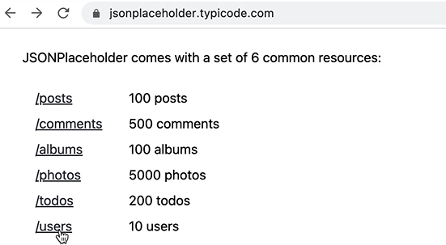 If we make a request to this url we will get this list of users with all these propertys... 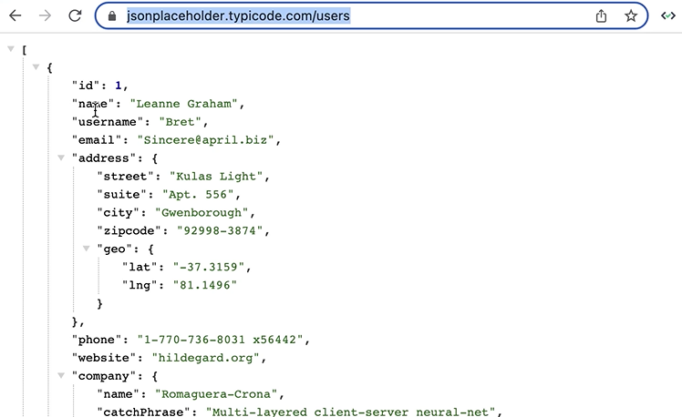
Sending HTTP Requests
To send a request to the server, we can use the fetch function that is implemented in all modern browsers.
But alot of people prefer a library called 'axios'.
Install axios
In the terminal install axios...
npm i axios@1.3.4
We are about to fetch the users from JSONPlaceholder.
Import axios into the app...
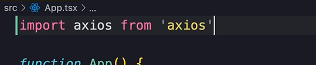Next, declare a state var for storing the users...
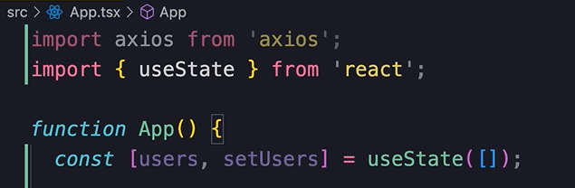
Then use the effect hook to make a call to the server...
Then we call axios.get() and pass the url of the endpoint...
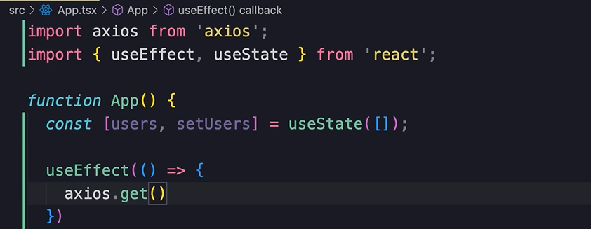
So grab this url...
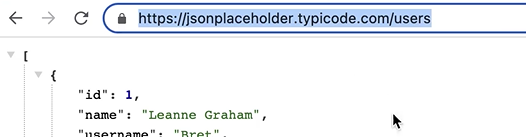
And paste it here...
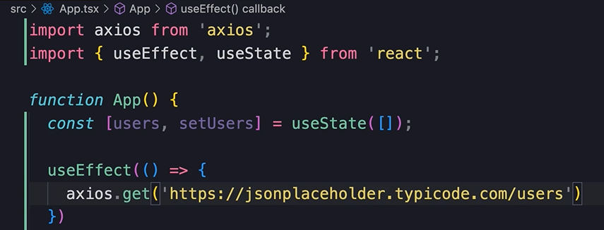
.then()
You must understand, this is not going to be instant. It might take half a second or whatever.
What you need to know is that this method returns a promise.
A promise is an object that holds the eventual result, or failure of an asynchronous operation.
Asynchronous is just a fancy word for 'this is going to take a long time'.
💡❓ All promises have a method called 'then'
So we call then on the method that returns the promise...
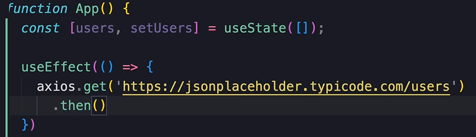
And we pass it a callback function.
That callback function will get executed when the promise is resolved
and the result is ready.
In this case we need the function param to be the response...
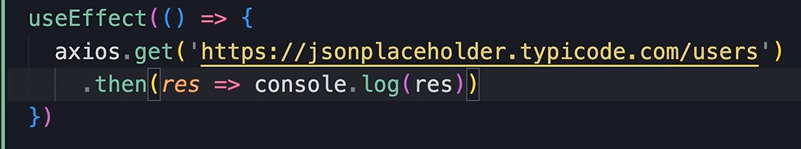
Logging the response
So this is what we get...
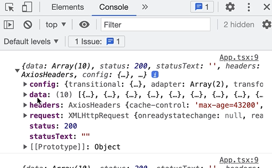Data is where we have the user objects...
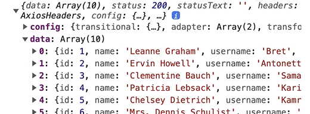So if we log res.data
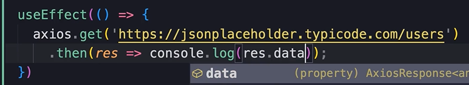We get just the user objects...